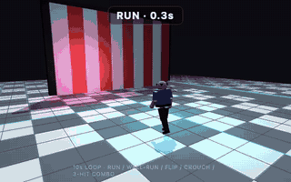

How much can a model fold into 8,000 tokens? Every model gets the same short prompt and must return one self-contained HTML file (three.js scene, physics sandbox, raymarching shader) under an 8,000-token output budget. Then it is actually run: headless WebKit, 7-second video, health checks, video-judge score.

Score 1-10 from the video judge, capped at 4 if nothing moves. Click a score to open that model's scene live in your browser.
| # | model | mean | Walking humanoid | Physics sandbox | Clockwork machine | Raymarched SDF |
|---|---|---|---|---|---|---|
| 1 | Claude Sonnet 5.5 | 7.2 | 7 | 7 | 7 | 8 |
| 2 | Claude Opus 5.5 | 7.0 | 7 | 7 | 6 | 8 |
| 3 | Muse Spark 1.3 | 6.5 | 7 | 7 | 5 | 7 |
| 4 | Muse Wonder Full 1.0 | 6.2 | 6 | 6 | 6 | 7 |
| 5 | gpt-6-luna | 6.0 | 6 | 7 | 4 | 7 |
| 6 | free-auto (free router) | 4.0 | 5 | 5 | 5 | 1 |
Differences under half a point are noise. The two Muse rows were scored by a different judge than the others, so compare them with care. Full table with judge notes: results/2026-10-12.md · code and method: GitHub.